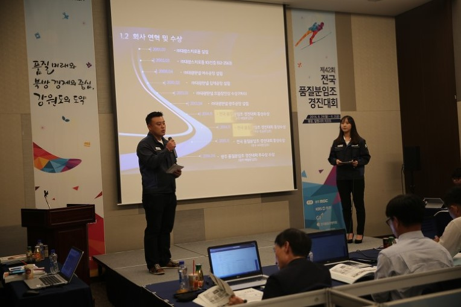

3년연속 대통령상 수상 !!
제40회, 제41회 전국품질분임조 경진대회에서 대통령상을 수상한 (주)대광판넬 !
강원도 평창 알펜시아리조트에서 개최된
제42회 전국품질분임조 경진대회에서 영광의 대통령상을 또다시 수상했습니다.


이번 제42회 전국품질분임조 경진대회는 8월29일부터 9월2일까지 5일간,
‘품질의 미래와 북방 경제 중심, 강원도의 도약’ 이라는 주제로 개최되었습니다.
‘산업계의 전국체전'이라 불리우는
이번 제42회 전국품질분임조 경진대회에서는 17개 시.도별 예선을 거쳐 선발된 297개팀 3800여명의
분임원이 참여하여 뜨거운 경쟁을 벌였는데요.
(주)대광판넬 광주공장의 메탈분임조는 전국 대기업 품질분임조와의 경쟁에서 당당히 대통령상을 수상했고, (주)대광판넬은 한번도 어렵다는 대통령상을 3년 연속 받게되는 영광을 안게되었습니다.
이번 경진대회에 참여한 대광판넬 한갑호 대표와 임직원들은
"언제나 '품질이 생명이다'라는 문구를 전 임직원이 365일 가슴에 새기며
최고의 기술로 최고의 제품을 만들어낼 것이다"라고 말하며,
"대통령상 3년연속 수상에 자만하지않고 더 노력하는 대광판넬을 만들겠다"고 다함께 다짐하였습니다.